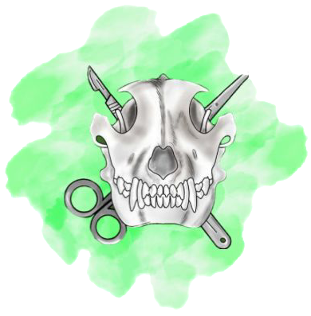

Videoaulas Material de Apoio para estudo 1 de junho de 2024 GEAV Vídeos de Osteologia Cabeça óssea Ossos carpos, metacarpos e falange Coxal de equinos Escapula Fêmur, tíbia e tarso Rádio e Ulna Úmero Vídeos de Artrologia Articulações do membro pélvico Articulações do membro torácico vídeos de neuroanatomia Plexo Braquial de Equino